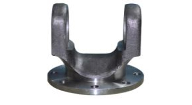
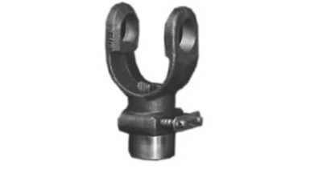
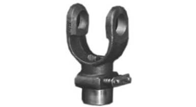
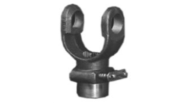
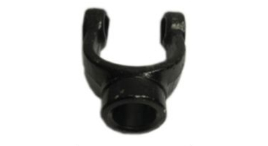
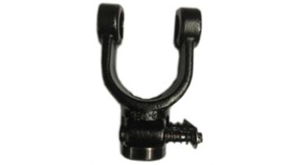
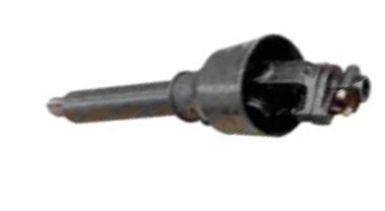
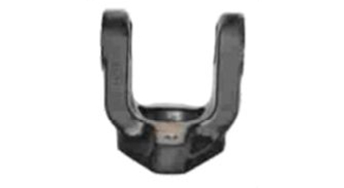
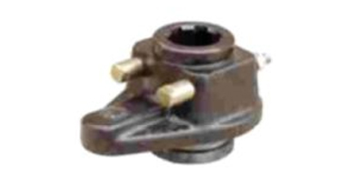

Yoke
Browse our PTO shaft yokes and power transmission components. Contact our team to discuss models, fitment, drawings and application requirements.
Explore the range and contact us with your fitment or component requirements.
No matching products found. Try another search.












